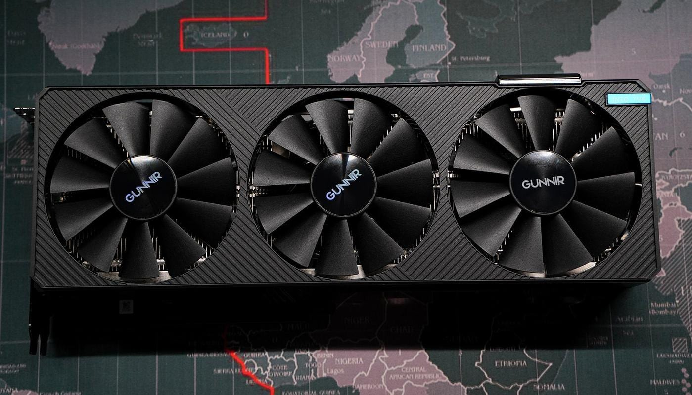

Intel Arc A750

Arc 家族中端主力，28 个 Xe 核心、8GB 显存，价格下探到甜点区间，2K 中高画质可用，AV1 编码与 XeSS 超采样加持、价格厚道的高性价比尝鲜之选。
客观评测
Arc A750 保留了与 A770 相同的 256-bit 显存位宽与完整媒体引擎，仅削减至 28 个 Xe 核心与 8GB 显存，价格下探到两千元以内。它在 1080p 高画质与 2K 中高画质下可流畅运行主流游戏，光追性能不弱于同价位竞品。AV1 硬件编码对直播与视频导出是实用加分项。短板依然是驱动成熟度、老游戏兼容性与偏高的待机功耗。预算有限又想尝鲜的用户可以考虑。
主观点评
A750 是 Intel 诚意最足的一张卡：价格一降再降，性能越更越强，颇有“早买早享受、晚买享折扣”的戏剧性。它跑新游戏像模像样，遇到老游戏就看驱动心情。如果你主要玩近两年的游戏、偶尔剪剪视频，它的性价比会让钱包开心。当然，把它当主力卡需要一点折腾精神。对喜欢支持挑战者的玩家来说，这份参与感本身就是乐趣。
优点与不足
- 价格厚道，256-bit 位宽同价位少见
- AV1 编码与 DP 2.0 接口，内容创作友好
- 驱动持续打磨，性能随更新稳步提升
- 8GB 显存在部分 3A 大作高材质下略显不足
- 驱动仍偶有兼容性问题，待机功耗偏高
参数规格
| GPU 核心 | ACM-G10（Xe HPG），台积电 N6 |
|---|---|
| Xe 核心 | 28 个（3584 个 ALU） |
| 光追单元 | 28 个 |
| XMX 引擎 | 448 个，支持 XeSS 超采样 |
| 显存容量 | 8GB GDDR6 |
| 显存位宽 | 256-bit |
| 显存带宽 | 512GB/s |
| 核心频率 | 2050MHz |
| TDP | 225W |
| 供电接口 | 8-pin + 6-pin，建议 600W 电源 |
| 总线接口 | PCIe 4.0 ×16 |
| 视频输出 | 3×DP 2.0 + 1×HDMI（依版本） |
| 特色技术 | XeSS 超采样、AV1 硬件编解码、Deep Link |
| 上市 | 2022 年 10 月 |